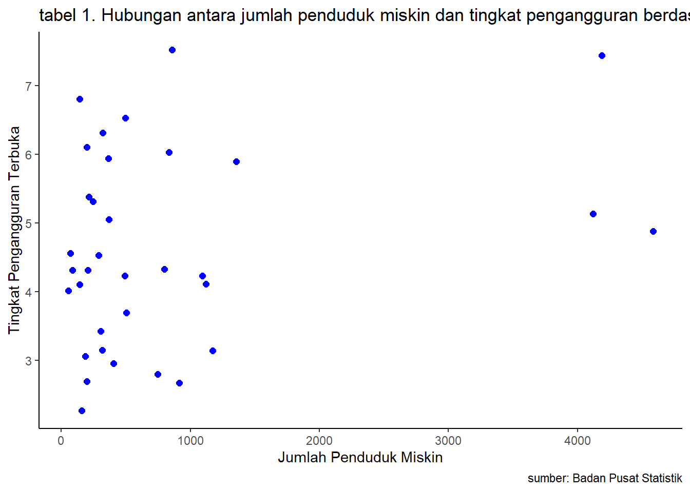

library(tidyverse)
library(readxl)
library("ggplot2")
library("readxl")
library("dplyr")Hubungan antara jumlah penduduk miskin dan tingkat pengangguran berdasarkan provisi ditahun 2023
Metode Penelitian Politeknik APP Jakarta
.jpg)
1 Pendahuluan
1.1 Latar belakang
Pertumbuhan ekonomi suatu negara dapat diukur dari beberapa indikator, salah satunya adalah tingkat pengangguran dan jumlah penduduk miskin. Kedua indikator ini memiliki keterkaitan yang erat dan seringkali saling memengaruhi. Ketika tingkat pengangguran tinggi, cenderung meningkatkan jumlah penduduk miskin, dan sebaliknya. Oleh karena itu, pemahaman hubungan antara keduanya menjadi krusial untuk merancang kebijakan ekonomi yang efektif. Di Indonesia pada tahun 2023, pemerintah menghadapi tantangan signifikan terkait masalah pengangguran dan kemiskinan. Perubahan dalam jumlah penduduk miskin dan tingkat pengangguran yang terjadi di setiap provinsi bisa menjadi indikator penting untuk mengevaluasi keberhasilan kebijakan ekonomi dan sosial yang telah diterapkan.
1.2 Ruang lingkup
Ruang lingkup pembahasan masalah sesuai dengan variable yang akan digunakan pada analisis kali ini, yaitu mengenai Jumlah Penduduk Miskin terhadap Tingkat Pengangguran Terbuka dari daerah dan tahun terkait. Batasan masalah ini berperan membantu dalam mengidentifikasi masalah yang akan dibahas dan membatasi jangkauan proses yang dibahas.
1.3 Rumusan masalah
Apakah adanya pengaruh Jumlah Kemiskinan Penduduk terhadap Tingkat Pengangguran Terbuka?
Apakah Tingkat Pengangguran Terbuka berpengaruh besar terhadap Jumlah Kemiskinan Penduduk?
1.4 Tujuan dan manfaat penelitian
Tujuan penelitian ini untuk mengetahui pengaruhnya Jumlah Penduduk Miskin di daerah dan tahun terkait terhadap Tingkat Pengangguran Terbuka di daerah dan tahun terkait.
Manfaat penelitian ini agar masyarakat mengerti bahwa adanya pengaruh Jumlah Penduduk Miskin terhadap Tingkat Pengangguran Terbuka di daerah terkait.
1.5 Package
Ini tidak wajib ada di tulisan anda tapi anda dapat menunjukkan Packages yang digunakan antara lain sebagai berikut:
2 Studi pustaka
Menurut Supriatna (1997:90) menyatakan bahwa kemiskinan adalah situasi yang serba terbatas yang terjadi bukan atas kehendak orang yang bersangkutan. Suatu penduduk dikatakan miskin bila ditandai oleh rendahnya tingkat pendidikan, produktivitas kerja, pendapatan, kesehatan serta kesejahteraan hidupnya, yang menunjukkan lingkaran ketidakberdayaan.
3 Metode penelitian
3.1 Data
| Provinsi | JPM |
|---|---|
| ACEH | 833,91 |
| SUMATERA UTARA | 1356,72 |
| SUMATERA BARAT | 364,79 |
| RIAU | 491,22 |
| JAMBI | 288,1 |
| SUMATERA SELATAN | 1119,65 |
| BENGKULU | 306 |
| LAMPUNG | 1091,14 |
| KEP. BANGKA BELITUNG | 72,05 |
| KEP. RIAU | 142,61 |
| DKI JAKARTA | 496,84 |
| JAWA BARAT | 4188,52 |
| JAWA TENGAH | 4119,93 |
| DI YOGYAKARTA | 503,14 |
| JAWA TIMUR | 4585,97 |
| BANTEN | 857,64 |
| BALI | 196,92 |
| NUSA TENGGARA BARAT | 746,04 |
| NUSA TENGGARA TIMUR | 1173,53 |
| KALIMANTAN BARAT | 370,71 |
| KALIMANTAN TENGAH | 141,78 |
| KALIMANTAN SELATAN | 206,92 |
| KALIMANTAN TIMUR | 243,99 |
| KALIMANTAN UTARA | 52,7 |
| SULAWESI UTARA | 195,85 |
| SULAWESI TENGAH | 403,74 |
| SULAWESI SELATAN | 800,24 |
| SULAWESI TENGGARA | 317,32 |
| GORONTALO | 185,31 |
| SULAWESI BARAT | 159,05 |
| MALUKU | 322,4 |
| MALUKU UTARA | 87,52 |
| PAPUA BARAT | 215,22 |
| PAPUA | 912,23 |
| Provinsi | TPT |
|---|---|
| ACEH | 6,03 |
| SUMATERA UTARA | 5,89 |
| SUMATERA BARAT | 5,94 |
| RIAU | 4,23 |
| JAMBI | 4,53 |
| SUMATERA SELATAN | 4,11 |
| BENGKULU | 3,42 |
| LAMPUNG | 4,23 |
| KEP. BANGKA BELITUNG | 4,56 |
| KEP. RIAU | 6,8 |
| DKI JAKARTA | 6,53 |
| JAWA BARAT | 7,44 |
| JAWA TENGAH | 5,13 |
| DI YOGYAKARTA | 3,69 |
| JAWA TIMUR | 4,88 |
| BANTEN | 7,52 |
| BALI | 2,69 |
| NUSA TENGGARA BARAT | 2,8 |
| NUSA TENGGARA TIMUR | 3,14 |
| KALIMANTAN BARAT | 5,05 |
| KALIMANTAN TENGAH | 4,1 |
| KALIMANTAN SELATAN | 4,31 |
| KALIMANTAN TIMUR | 5,31 |
| KALIMANTAN UTARA | 4,01 |
| SULAWESI UTARA | 6,1 |
| SULAWESI TENGAH | 2,95 |
| SULAWESI SELATAN | 4,33 |
| SULAWESI TENGGARA | 3,15 |
| GORONTALO | 3,06 |
| SULAWESI BARAT | 2,27 |
| MALUKU | 6,31 |
| MALUKU UTARA | 4,31 |
| PAPUA BARAT | 5,38 |
| PAPUA | 2,67 |
penelitian ini menggunakan data Jumlah Penduduk Miskin dan Tingkat Pengangguran Terbuka
#import dataset
setwd("C:/UAS METOPEL ZAHRA")
library(readxl)
dat<-read_excel("DAT JPM TPT.xlsx")
head(dat)# A tibble: 6 × 3
PROVINSI TPT JPM
<chr> <dbl> <dbl>
1 ACEH 6.03 834.
2 SUMATERA UTARA 5.89 1357.
3 SUMATERA BARAT 5.94 365.
4 RIAU 4.23 491.
5 JAMBI 4.53 288.
6 SUMATERA SELATAN 4.11 1120.library("ggplot2")
library("readxl")
library("dplyr")
ggplot(data=dat,aes(x=JPM ,y=TPT)) +
geom_point(color="blue",size=2) + # setiap nambah command, selalu kasih tanda +
labs(title= "tabel 1. Hubungan antara jumlah penduduk miskin dan tingkat pengangguran berdasarkan provisi ditahun 2023",
x="Jumlah Penduduk Miskin",
y="Tingkat Pengangguran Terbuka",
caption = "sumber: Badan Pusat Statistik") +
theme_classic()
3.2 Metode analisis
Metode yang dipilih adalah regresi univariat atau Ordinary Least Square (OLS) dengan 1 variabel independen. Penelitian ini merbaksud mencari hubungan antara hwy dan cty. Spesifikasi yang dilakukan adalah:
\[ y_{t}=\beta_0 + \beta_1 x_t+\mu_t \] di mana \(y_t\) adalah JPM dan \(x_t\) adalah TPT.
4 Pembahasan
4.1 Pembahasan masalah
Dikarenakan saya menggunakan OLS, Pembahasan saya disini hanya menghubungkan Jumlah Penduduk Miskin Sekolah dan Tingkat Pengangguran Terbuka. Data tersebut saya satukan untuk saya regresi dan tampilannya seperti ini.
4.2 Analisis masalah
Hasil regresinya adalah
reg1<-lm(JPM~TPT,data=dat)
summary(reg1)
Call:
lm(formula = JPM ~ TPT, data = dat)
Residuals:
Min 1Q Median 3Q Max
-1134.5 -650.6 -264.1 218.1 3718.9
Coefficients:
Estimate Std. Error t value Pr(>|t|)
(Intercept) -174.8 671.2 -0.261 0.796
TPT 213.5 139.2 1.534 0.135
Residual standard error: 1135 on 32 degrees of freedom
Multiple R-squared: 0.06847, Adjusted R-squared: 0.03936
F-statistic: 2.352 on 1 and 32 DF, p-value: 0.13495 Kesimpulan
Dari hasil regresi dapat dilihat bahwa setiap meningkat 300 ribu Tingkat Pengangguran Terbuka maka Jumlah Penduduk Miskin pada daerah tersebut angkat meningkat sebesar 8,569 persen. Dari hasil regresi tersebut dapat disimpulkan bahwa Tingkat Pengangguran Terbuka berpengaruh terhadap Jumlah Penduduk Miskin dibeberapa daerah pada tahun 2023.
6 Referensi
Saifuddin, Azwar, (1988). Sikap Manusia Teori dan Pengukuranny, Liberty : Yogyakarta
Emil Salim, (1997). Kemiskinan : Teori, Fakta dan kebijakan, impac Edisi
Arsyad, Lincoln, (1992). Memahami Masalah Kemiskinan di Indonesia : Suatu Pengantar, JEBI No. 1 Tahun VII Fakultas Ekonomi UGM: Yogyakarta.